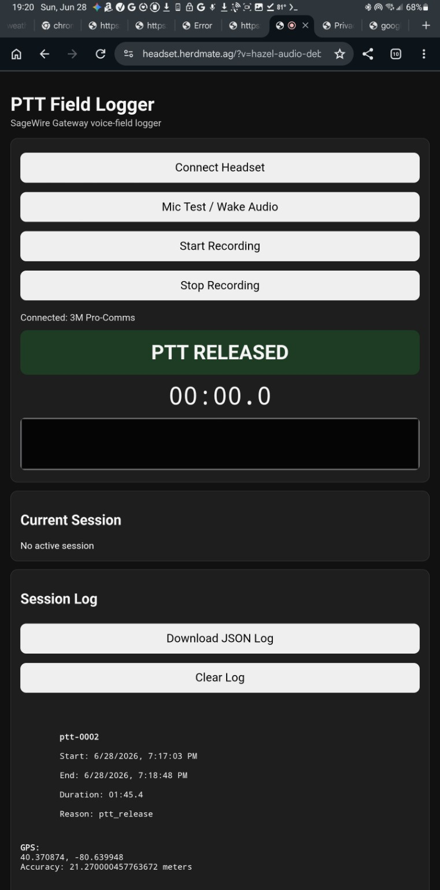
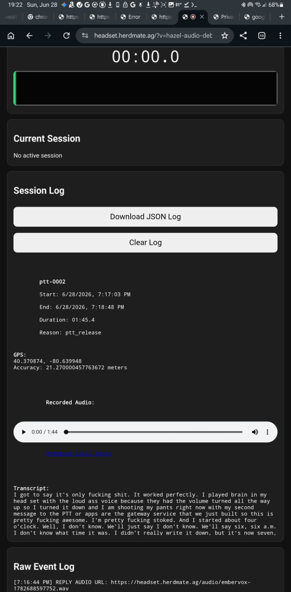
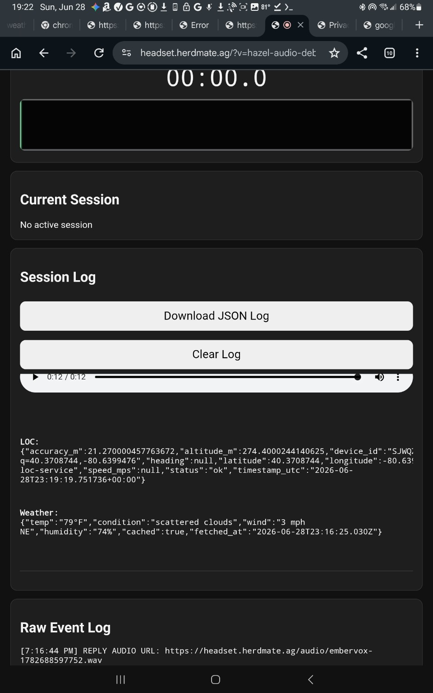

Walk. Work. Talk.
SageWire handles the rest.
SageWire is a modular AI service platform for real-world applications. It connects speech, location, weather, AI, logging, and future services through one reusable Gateway.
{
"service": "sagewire-api-gateway",
"status": "ok",
"version": "1.0"
}
Gateway greenlight confirmed.
SageWire Gateway
The central routing layer for the platform. Applications call the Gateway; the Gateway coordinates speech, location, weather, AI, logging, and future capabilities.
Core Services
Independent services that can be reused by any SageWire-powered application.
Gateway
Central API router and future control plane.
EmberVox · TTS
Text-to-speech voice generation for spoken replies.
STT
Speech-to-text transcription for voice sessions.
LOC
Location stamps: GPS, elevation, accuracy, heading, speed, and map links.
WX
Weather context by latitude and longitude.
PTT
Push-to-talk recording, session handling, and headset workflow.
Built With SageWire
Applications powered by the service platform.
🎧 PTT Field Logger
A hands-free AI field assistant. Press a headset button, speak naturally, and SageWire records audio, transcribes it, captures location and weather, replies with AI, speaks back through the headset, and logs the session.
🌾 HerdMate.ag
A livestock and ranch management platform. HerdMate can use SageWire services for field notes, location, weather, voice capture, AI summaries, and future RFID workflows.
Field Proof
Photos and videos can live here. Drop files into the repo's assets folder and swap the links later.

3M Pro-Comms connected through the PTT app.

Transcript, audio playback, and logged field session.

LOC and WX attached to a voice session.
Add a headset walk-and-talk demo here when ready.
Add a Gateway or MAP/OPS/SOP overview here.
Add headset, tags, reader, ranch, or build photos here.
MAP · OPS · SOP
The operating language of the SageWire platform.
MAP
What exists: services, applications, domains, servers, owners, and endpoints.
OPS
What is happening: health checks, logs, deployments, request counts, and service status.
SOP
How to build: repeatable playbooks for DNS, Docker, Coolify, Gateway wiring, and tests.
A product may depend on a service.
A service must never depend on a product.
This rule keeps applications lighter, services reusable, and the platform easier to grow.
Service Registry
Current public endpoints.